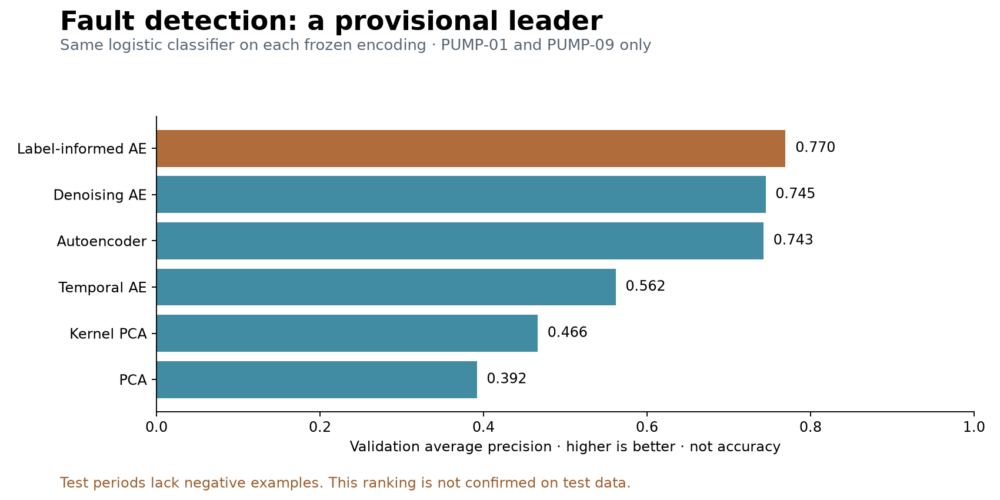

Which encoding detects faults best?
No confirmed overall winner yet.
Label-informed AE + a simple linear classifier leads the main validation comparison. But only two pumps support that comparison, and their test periods contain no negative examples. We cannot establish the test false-alarm rate.
On PUMP-01, this detector caught only 45.1% of faulty test minutes. On PUMP-09 it caught 100.0%. High recall alone would not show a good detector when every test minute is faulty.
“Is any fault present?”

Training uses earlier observations. Validation compares faulty with no-event minutes on PUMP-01 and PUMP-09. Each model gets the same classifier and examples. Higher AP means better ranking; 0.77 does not mean 77% accuracy.
Main comparison · linear classifier
| Encoding | Validation AP |
|---|---|
| Label-informed AE | 0.770 |
| Denoising AE | 0.745 |
| Autoencoder | 0.743 |
| Temporal AE | 0.562 |
| Kernel PCA | 0.466 |
| PCA | 0.392 |
Two pumps, equal weight. The label-informed lead is small and does not establish stability across new data.
Check · nearest neighbors
| Encoding | Validation AP |
|---|---|
| Autoencoder | 0.496 |
| Label-informed AE | 0.487 |
| Denoising AE | 0.481 |
| Kernel PCA | 0.470 |
| PCA | 0.448 |
| Temporal AE | 0.445 |
The winner changes when the classifier changes. There is no universal winning representation.
“Which known fault is present?”
| Encoding | Validation AP |
|---|---|
| PCA | 0.823 |
| Label-informed AE | 0.782 |
| Kernel PCA | 0.759 |
| Temporal AE | 0.597 |
| Denoising AE | 0.538 |
| Autoencoder | 0.497 |
This separate test uses four pump/fault cases over three pumps. PCA leads here. It does not measure the same target or use the same cases as the binary fault comparison.
What we can say
PCA was the strongest reconstruction baseline. The label-informed AE is a promising candidate for binary fault detection with a linear classifier, but its test performance is inconsistent. More labeled test periods with both faulty and no-event behavior are needed to confirm a winner.
No ambiguous labels were treated as normal, no future labels trained the classifiers, and no encoder was refitted. The original chronological split remains intact.
Back to embedding explorer · All detector scores · Label coverage · Frozen validation decision